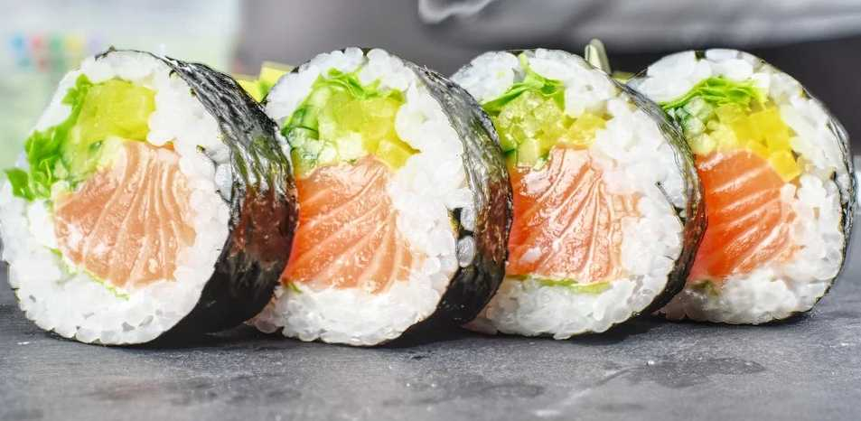
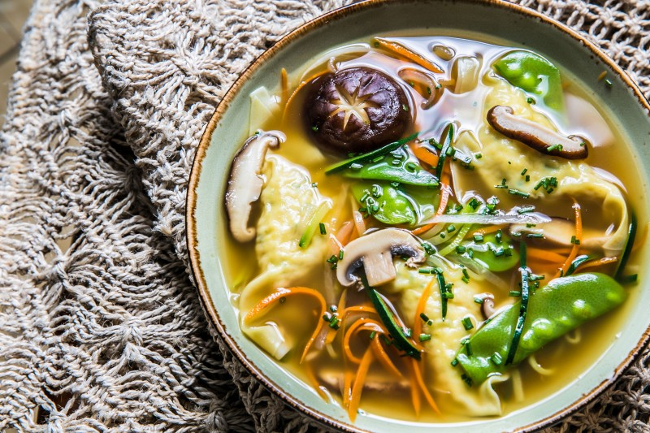
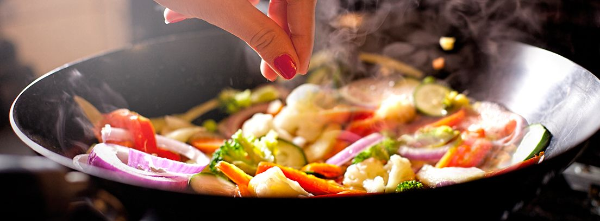
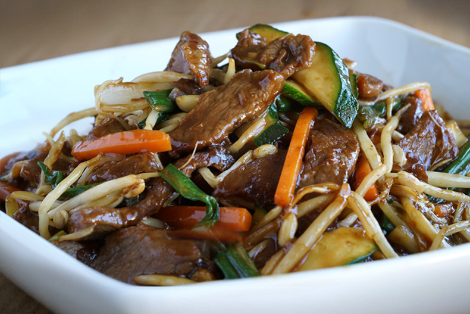
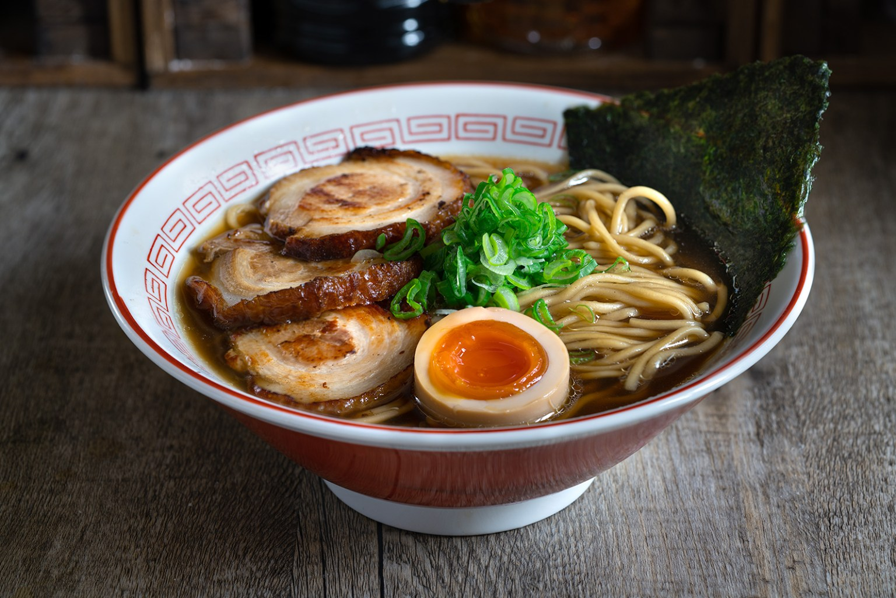

La gastronomía asiática esta de llena sabores y beneficios
La comida asiática está cada vez más presente en la gastronomía de cualquier país, no es para menos, teniendo en cuenta que abarca una gran parte de la población mundial. Probablemente la china y la japonesa son las más extendidas y conocidas por todos, pero la gastronomía de países como India, Vietnam o Tailandia le siguen a la cola. Cada vez está ganando más adeptos en la sociedad española, así que vamos a conocer un poco más a fondo la cocina nipona.
Los orientales, agricultores y pescadores de hábitos vegetarianos, casi siempre se alimentaron con verduras, hervidas y fermentadas, a la vez que con abundante pescado. Es una gastronomía de elegante sencillez. Se caracteriza por sus sabores naturales y por su empeño en utilizar productos frescos. Este tipo de cocina es conocida por su énfasis en la estacionalidad de los alimentos, la calidad y presentación de sus ingredientes. Los métodos de cocción y la bonita presentación que ofrecen en cuencos o en fuentes rectangulares realzan las cualidades naturales de los ingredientes.

La cocina asiática tiene muchos platos típicos, pero uno de los más importantes es el arroz y es que es en lo que se basa la cocina de estos países. En su cocina más tradicional cualquier otro platillo servido durante la comida se considera secundario y únicamente sirve para realzar el sabor del arroz. Evidentemente tienen muchos tipos de arroz.

Pero más allá del arroz, su gastronomía se distingue por el uso abundante y variado de pescado, así como legumbres como la soja, muchas verduras y ricas especias. No hace falta ser un experto conocedor de su gastronomía para saber que esto es bien cierto. ¿Quién no conoce el arroz chino o el sushi japonés? Dos elementos distintivos de la comida asiática y bien aceptados y saboreados en nuestra cultura occidental.

La sopa es otro elemento omnipresente en la comida asiática y en todas y cada una de sus variaciones. Suelen tomarla como primer plato, sobre todo en el sudeste asiático y es saludable porque el caldo se elabora a partir de mariscos, algas, pescados y se le añaden, después, varios tipos de fideos. Las sopas aportan líquidos, minerales, proteínas, minerales y sacia el hambre antes de la llegada del segundo plato o vianda principal. Un aspecto, desde luego, también muy recomendable para evitar excesos.

La gastronomía asiática está considerada una de las más saludables del planeta. Con miles de años de historia, la comida asiática es rica en fibra y nutrientes y muy equilibrada. Todo lo contrario a buena parte de la gastronomía occidental, donde cada día aumentan los problemas relacionados con la hipertensión, la diabetes, y otras enfermedades. Utiliza por lo general ingredientes sanos y frescos y prioriza la cocción al vapor o salteados en el wok, lo que mantiene muchas de sus propiedades. Ello contribuye a una mayor aportación de nutrientes, vitaminas y proteínas por el organismo. Como condimento, tira mucho de salsas y especias, utiliza poca sal y son platos poco calóricos.
Generalmente, en la gastronomía de Asia no suele ser habitual el consumo de leche, cuyo aporte en calcio substituyen con algunos vegetales. Por otro lado, combaten la osteoporosis con un consumo muy elevado de soja, presente en muchos platos de su dieta.
Por otro lado, el uso de palillos contribuye a ingerir los alimentos de una manera más tranquila y pausada, masticar mejor y digerir mejor las viandas. Mientras que el té verde, otro de sus productos estrella, tiene poder digestivo y antioxidante.
Estamos ante uno de esos descubrimientos que llegaron a occidente hace pocos años pisando muy fuerte. Esperemos que con este artículo hayan entendido mejor la cocina asiática, porque entenderla es disfrutarla.

Pollo al limó estilo chino
¿Quien quiere KFC teniendo este maravilloso pollo?Hoy me apetecía comer el pollo algo más crujiente, por eso lo he cortado en trozos finos y una vez frito lo cubro con la salsa por arriba, aunque se puede preparar de la forma habitual..

Chop Suey de ternera
Una combinación perfecta de pequeños trozos mezcladosDespués de muchísimas peticiones y sugerencias acerca de esta receta, hoy preparemos el famoso “Chop Suey” y para los que no sepáis qué es, os diré que literalmente significa “trozos mezclados”...

Shoyu Ramen
Una sopa deliciosa para esos días de frioEl Ramen es una de las sopas de noodles más famosas de la cocina japonesa. Comenzó cuando la cultura china empezó a llegar a Japón...